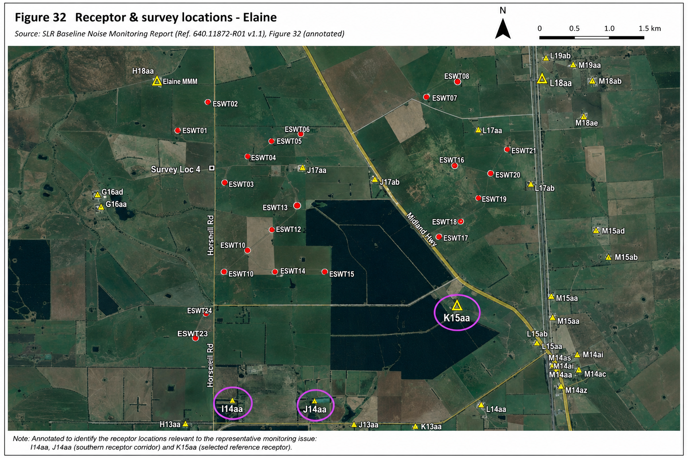
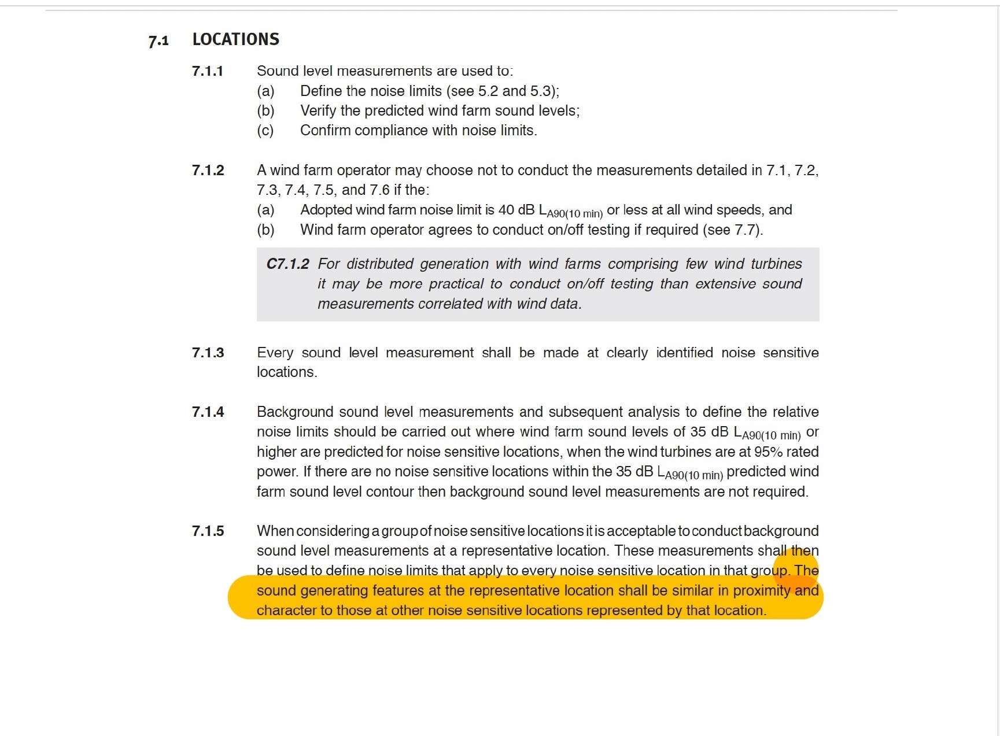
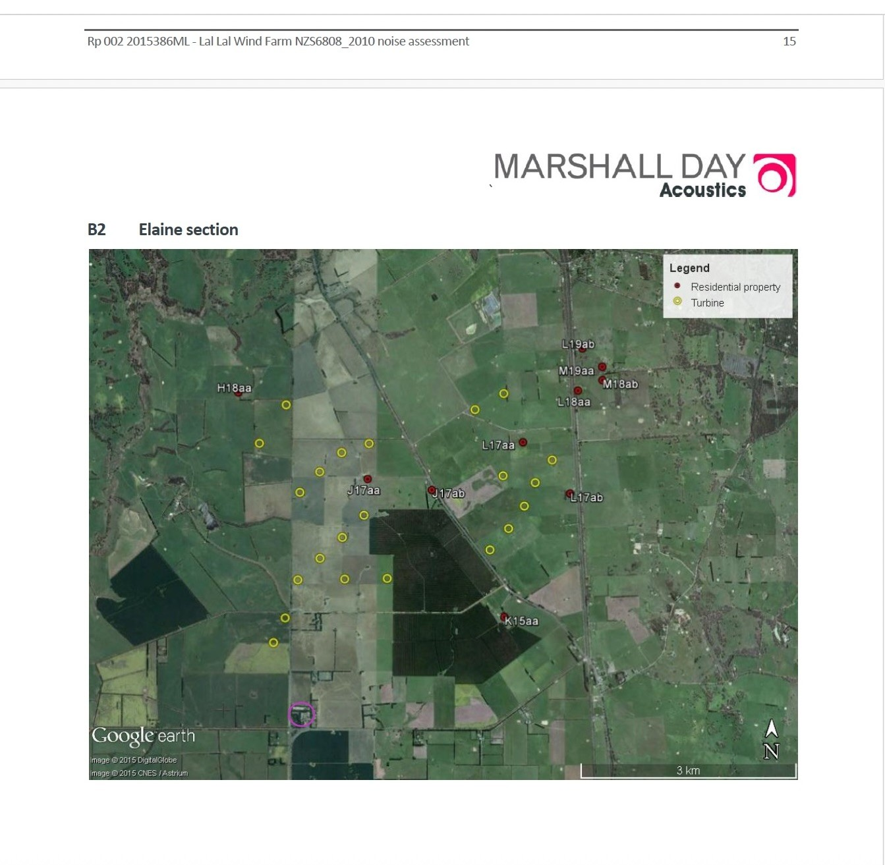
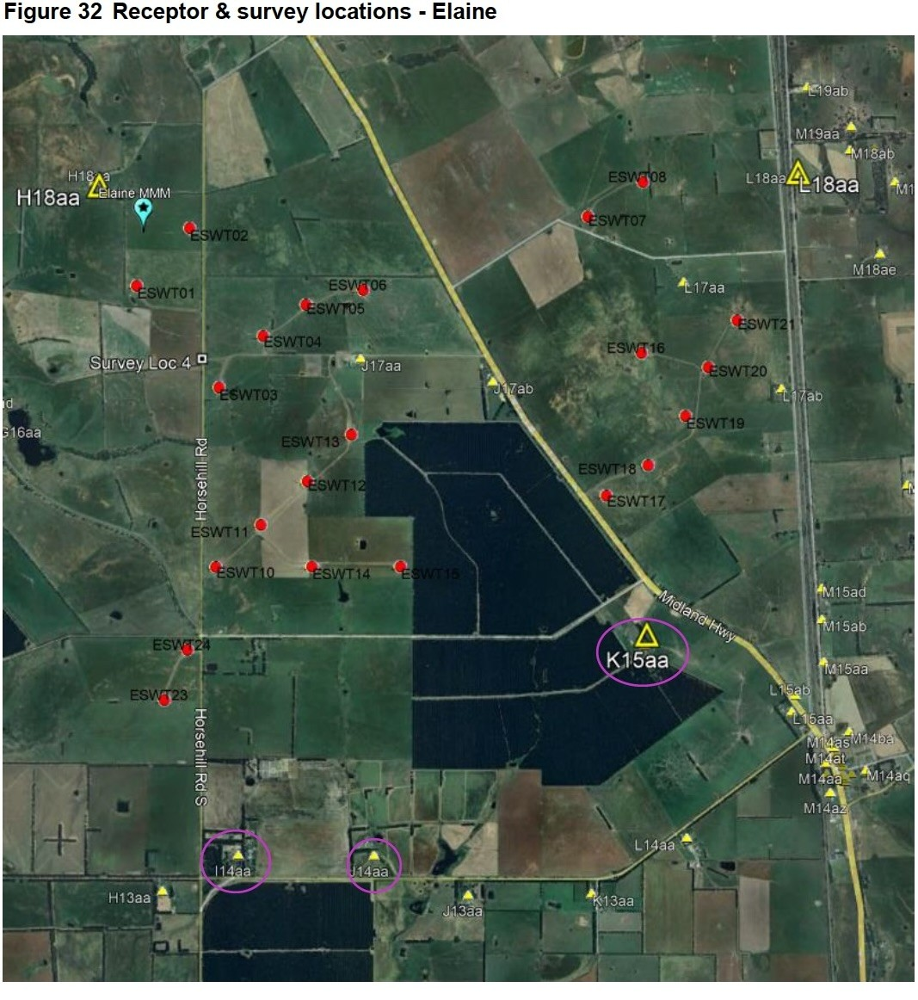

Representative Monitoring — The Documentary Record
The documentary history of representative monitoring at the Lal Lal Wind Farm, tracing I14aa, J14aa and K15aa through the planning, technical and regulatory record.
How K15aa became the representative location for J14aa
This page follows the disclosed documentary pathway by which K15aa was used as the representative background location for J14aa, while also recording the historical treatment of I14aa. It does not determine technical correctness; it identifies what the record expressly explains and where an express comparison has not presently been located.

NZS 6808:2010 Clause 7.1.5
When considering a group of noise sensitive locations it is acceptable to conduct background sound level measurements at a representative location. These measurements shall then be used to define noise limits that apply to every noise sensitive location in that group. The sound generating features at the representative location shall be similar in proximity and character to those at other noise sensitive locations represented by that location.
The governing test is therefore not limited to identifying the nearest approved reference receptor. The representative location must have sound-generating features similar in both proximity and character to the locations it represents.

The early assessment of the southern receptor area
I14aa initially selected and later removed
Marshall Day records that I14aa was initially selected under the preliminary layout and later removed after the proposed layout predicted a level below 35 dBA. The disclosed passage records a prediction-threshold decision; it does not state that I14aa was unsuitable as a representative location for nearby receptors.
L Huson identifies St Sava Monastery
The Huson review identifies the monastery as an additional noise-sensitive location not assessed in the amended Marshall Day tables.
Marshall Day responds
Marshall Day's response acknowledges and maps St Sava Monastery together with the applicable contour information. The response addresses predicted noise exposure but does not provide an express I14aa–J14aa–K15aa comparison under Clause 7.1.5.


Transition to K15aa as the reference location
Elaine–Mount Mercer Road properties not selected for formal representative monitoring
The Community Reference Group minutes record that properties along Elaine–Mount Mercer Road were not regarded as the best locations for representative monitoring. The disclosed explanation should be read as part of the later operational pathway.
No measurement point south of the turbines
The draft EPA desktop review records that no measurement point was located south of the turbines and that northerly wind conditions may not have been adequately represented.
Huson disputes the proxy; SLR explains reliance on K15aa
L Huson states that K15aa background data should not be used for J14aa. SLR subsequently relies on K15aa's status within the approved reference network and identifies proximity, orientation, vegetation, wind-sector and predicted-noise considerations. The presently disclosed letter does not expressly compare K15aa with I14aa under the full Clause 7.1.5 test.
What the disclosed record establishes
| Documentary question | Presently disclosed record |
|---|---|
| Does NZS 6808 permit representative background monitoring? | Yes. Clause 7.1.5 permits measurements at a representative location for a group of noise-sensitive locations. |
| What test applies? | The sound-generating features at the representative location must be similar in proximity and character to those at the locations represented. |
| How was I14aa treated historically? | It was initially selected for monitoring and later removed after predicted noise fell below 35 dBA. St Sava Monastery was subsequently identified and mapped as a noise-sensitive location. |
| How was K15aa used operationally? | SLR treated K15aa as the relevant reference receptor and representative background location for J14aa. |
| Was an express comparison of I14aa, J14aa and K15aa identified? | Not presently located within the disclosed documentary record reviewed for this page. |
The comparison not presently identified
The disclosed record explains why I14aa ceased to be a mandatory monitoring site under the earlier predicted-noise assessment and records the later operational reliance on K15aa for J14aa. What has not presently been identified is an express comparative assessment of I14aa, J14aa and K15aa against the requirement that sound-generating features be similar in proximity and character.